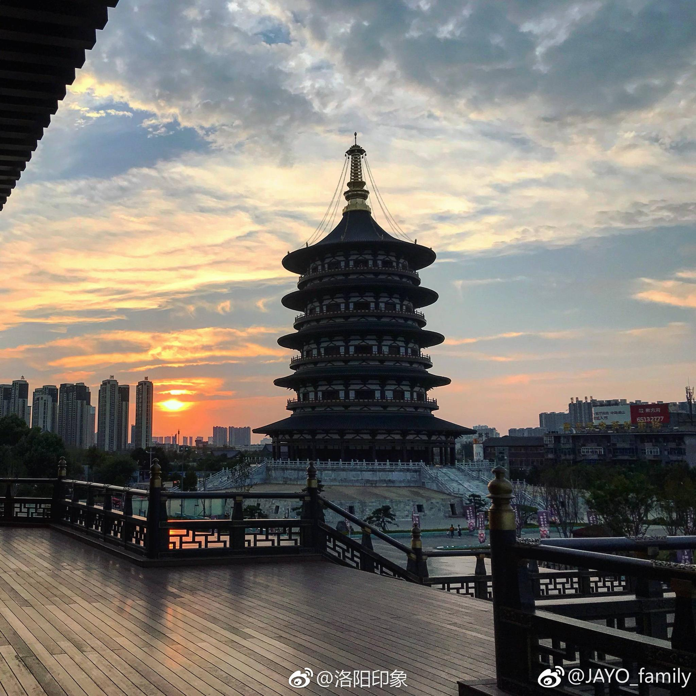

外部交通：
飞机：洛阳北郊机场位于市区北部，有发往北京、上海、广州、深圳、成都、重庆、杭州等城市的航班，机场有多条机场大巴线路可前往市区各地，也可以乘坐 83 路公交或打车前往市区。
火车：
洛阳站：位于市区中心，是陇海铁路和焦柳铁路的交汇站，普通列车较多，可直达国内多个城市，出站后可直接换乘地铁 2 号线。
洛阳龙门站：主要停靠高铁和动车，距离龙门石窟较近，方便游客前往龙门石窟等景区，也直通地铁 2 号线。
洛阳东站：主要办理货运业务，客运列车相对较少。
汽车：洛阳客运总站位于洛阳站东 200 米处，有发往河南省内及周边省市的长途客车。
市内交通：
地铁：目前洛阳开通了地铁 1 号线和地铁 2 号线，覆盖了市区的主要区域和部分景点，如隋唐洛阳城景区可乘坐地铁 1 号线到应天门站下。
公交：洛阳的公交线路众多，基本覆盖了市区和周边的各个景点，可使用 “洛阳行” app 查询最新的公交线路和班次时间。
出租车 / 网约车：出租车起步价为 8 元 / 2 公里，之后每公里 1.5 元。网约车在洛阳也很方便，常用的网约车平台如滴滴出行、曹操出行等在洛阳都可以使用。
共享单车 / 电动车：洛阳市内有多家共享单车和电动车品牌，如哈啰、美团、青桔等，在市区和景区周边都有投放点，适合短途出行。
景区交通：
龙门石窟：距洛阳北郊机场约 27 公里，车程时间约 30 分钟；距洛阳火车站约 21 公里，车程时间约 30 分钟；距洛阳高铁龙门站约 6 公里，车程时间约 10 分钟。可从洛阳火车站乘 81 路公交车前往，车程约 40 分钟，还可从市区其他地方乘坐 53 路、60 路等到达。
关林：距洛阳北郊机场约 22 公里，车程时间约 30 分钟；距洛阳火车站约 15 公里，车程时间约 25 分钟；距洛阳高铁龙门站约 3.4 公里，车程时间约 10 分钟。市内可乘坐 15、39、55、58、69、71 路前往。
隋唐洛阳城景区：包括应天门遗址博物馆、明堂天堂、九洲池三个景区。公交可乘坐 8 路、26 路、33 路、52 路、61 路、76 路、81 路、106 路、305 路、501 路、888 路到应天门下车；地铁可乘坐地铁一号线到应天门站下，C2 口或 A 口出。